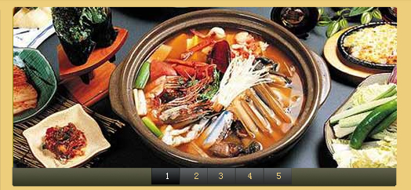
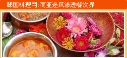

韩国料理--紫菜卷的做法
介绍韩国饮食特点十分鲜明，烹调虽多以烧烤为主，但口味非常讨中国人的喜爱。与中国料理不同的是，韩国料理比较清淡，少油腻，而且基本上不加味精，蔬菜以生食为主，用凉拌的方式做成，味道的好坏全掌握在厨师的手指中。尝过韩式白菜泡菜的客人都对这个韩国饮食文化中的“国粹”难以忘怀。韩式烤肉以高蛋白，低胆固醇的牛肉为主。
韩国料理蘑菇炒牛肉的做法详细介绍
蘑菇炒牛肉的制作材料：主料：瘦牛肉250克,鲜蘑菇250克调料：大蒜泥3克,生姜片3克,精盐5克,豆油40克,调料汁65克（或热水）,玉米粉12克,凉水250毫升,葱花少许。 蘑菇炒牛肉的特色：口味清香，牛肉细嫩，蘑菇清教您蘑菇炒牛肉怎么做，如何做蘑菇炒牛肉才好吃
韩国料理简介
 韩国料理别有风味，富于特色。"辣"是韩国料理的主要口味之一，但这种辣却与别的辣有所不同，有人曾经这样描述过，川菜的辣是麻辣，透着鲜美；湘菜的辣是火辣，直冲冲的，不加任何掩饰；而韩国菜的辣却入口醇香，后劲十足，会让你着着实实地把汗出透。
高丽参、鸡、新鲜牛肉、海产品、青菜、炖、蒸、烤……单是听到这些词汇已经觉得是很健康营养的原料同做法了。国料理一般选材天然，上不破坏营养成分的烹调方式，素搭配合理并且时制作追求少而精，以既保证足够的营养，不会叫人暴饮暴食。
韩国料理别有风味，富于特色。"辣"是韩国料理的主要口味之一，但这种辣却与别的辣有所不同，有人曾经这样描述过，川菜的辣是麻辣，透着鲜美；湘菜的辣是火辣，直冲冲的，不加任何掩饰；而韩国菜的辣却入口醇香，后劲十足，会让你着着实实地把汗出透。
高丽参、鸡、新鲜牛肉、海产品、青菜、炖、蒸、烤……单是听到这些词汇已经觉得是很健康营养的原料同做法了。国料理一般选材天然，上不破坏营养成分的烹调方式，素搭配合理并且时制作追求少而精，以既保证足够的营养，不会叫人暴饮暴食。



不知道今年大家逛街的时候有没有发现，很多时尚大牌都好像有默契地吹起了南亚风，其实除了服装以外，这股风潮早就在餐饮界慢慢渗透到每个角落。